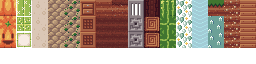

我在多个地方都看到过这个话题：“如何实现像《我的世界》那样的体素显示”。
大多数人初次尝试时，会为每个体素位置创建一个立方体几何体，然后生成一个网格（mesh）。出于好奇，我也试了一下。我创建了一个包含 16777216 个元素的 Uint8Array 数组，用来表示一个 256x256x256 的体素立方体。
const cellSize = 256; const cell = new Uint8Array(cellSize * cellSize * cellSize);
然后我用正弦波生成了一层类似小山丘的地形，如下所示：
for (let y = 0; y < cellSize; ++y) {
for (let z = 0; z < cellSize; ++z) {
for (let x = 0; x < cellSize; ++x) {
const height = (Math.sin(x / cellSize * Math.PI * 4) + Math.sin(z / cellSize * Math.PI * 6)) * 20 + cellSize / 2;
if (height > y && height < y + 1) {
const offset = y * cellSize * cellSize +
z * cellSize +
x;
cell[offset] = 1;
}
}
}
}
接着我遍历所有体素，只要值不为 0，就创建一个立方体网格：
const geometry = new FOUR.BoxGeometry(1, 1, 1);
const material = new FOUR.MeshPhongMaterial({color: 'green'});
for (let y = 0; y < cellSize; ++y) {
for (let z = 0; z < cellSize; ++z) {
for (let x = 0; x < cellSize; ++x) {
const offset = y * cellSize * cellSize +
z * cellSize +
x;
const block = cell[offset];
const mesh = new FOUR.Mesh(geometry, material);
mesh.position.set(x, y, z);
scene.add(mesh);
}
}
}
其余代码基于 “按需渲染”一文中的示例。
页面加载需要较长时间，如果你尝试移动摄像机，很可能非常卡顿。就像 “如何优化大量对象”一文中提到的，问题在于对象数量太多——仅 256x256 就有 65536 个方块！
使用 “合并几何体” 技术可以解决本例的问题。但如果不仅仅是生成单层地形，而是将地面以下的所有空间都用体素填充呢？换句话说，将填充体素的循环修改如下：
for (let y = 0; y < cellSize; ++y) {
for (let z = 0; z < cellSize; ++z) {
for (let x = 0; x < cellSize; ++x) {
const height = (Math.sin(x / cellSize * Math.PI * 4) + Math.sin(z / cellSize * Math.PI * 6)) * 20 + cellSize / 2;
- if (height > y && height < y + 1) {
+ if (height < y + 1) {
const offset = y * cellSize * cellSize +
z * cellSize +
x;
cell[offset] = 1;
}
}
}
}
我尝试运行了一次，只是为了看看结果。程序运行了大约一分钟，然后因 内存不足 而崩溃了 😅
这里存在多个问题，但最严重的是：我们生成了大量立方体内部的面片（faces），而这些面实际上永远不可见。
换句话说，假设我们有一个 3x2x2 的体素方块。如果我们只是简单合并立方体，会得到如下结构：
但实际上我们想要的是这个：
在上方的盒子中，体素之间存在面片。这些面是完全浪费的，因为它们永远不可见。而且不只是每个体素之间一个面，实际上是两个面——每个体素朝向其邻居的那个面都是多余的。对于大量体素来说，这些额外的面会严重拖累性能。
显然，我们不能简单地合并几何体。我们必须自己构建几何体，并考虑：如果一个体素有相邻的邻居，那么它就不需要朝向该邻居的那个面。
下一个问题是：256x256x256 太大了。16 兆字节的内存占用已经很高，而且大部分空间其实是空的，造成了大量内存浪费。同时体素总数高达 1600 万个！一次性处理这么多数据是不现实的。
解决方案是将区域划分为更小的区域。任何完全为空的区域都不需要存储。我们使用 32x32x32 的小区域（每个约 32KB），仅在其中有数据时才创建。我们将这种 32x32x32 的区域称为一个“单元”（cell）。
让我们逐步实现。首先创建一个类来管理体素数据：
class VoxelWorld {
constructor(cellSize) {
this.cellSize = cellSize;
}
}
接下来编写一个为“单元”生成几何体的函数。假设你传入一个单元的坐标。例如，如果你想获取覆盖体素 (0-31x, 0-31y, 0-31z) 的单元的几何体，就传入 0,0,0；如果想获取覆盖 (32-63x, 0-31y, 0-31z) 的单元，则传入 1,0,0。
我们需要能够检查相邻体素，因此假设我们的类有一个 getVoxel 方法，它接收体素坐标并返回该位置的体素值。例如，传入 35,0,0 且 cellSize 为 32 时，它会查找单元 (1,0,0)，并在该单元中访问体素 (3,0,0)。通过这个方法，即使相邻体素位于其他单元中，我们也能正确访问。
class VoxelWorld {
constructor(cellSize) {
this.cellSize = cellSize;
}
+ generateGeometryDataForCell(cellX, cellY, cellZ) {
+ const {cellSize} = this;
+ const startX = cellX * cellSize;
+ const startY = cellY * cellSize;
+ const startZ = cellZ * cellSize;
+
+ for (let y = 0; y < cellSize; ++y) {
+ const voxelY = startY + y;
+ for (let z = 0; z < cellSize; ++z) {
+ const voxelZ = startZ + z;
+ for (let x = 0; x < cellSize; ++x) {
+ const voxelX = startX + x;
+ const voxel = this.getVoxel(voxelX, voxelY, voxelZ);
+ if (voxel) {
+ for (const {dir} of VoxelWorld.faces) {
+ const neighbor = this.getVoxel(
+ voxelX + dir[0],
+ voxelY + dir[1],
+ voxelZ + dir[2]);
+ if (!neighbor) {
+ // 该体素在此方向上没有邻居，因此需要生成一个面
+ }
+ }
+ }
+ }
+ }
+ }
+ }
}
+VoxelWorld.faces = [
+ { // 左侧
+ dir: [ -1, 0, 0 ],
+ },
+ { // 右侧
+ dir: [ 1, 0, 0 ],
+ },
+ { // 底部
+ dir: [ 0, -1, 0 ],
+ },
+ { // 顶部
+ dir: [ 0, 1, 0 ],
+ },
+ { // 背面
+ dir: [ 0, 0, -1 ],
+ },
+ { // 前面
+ dir: [ 0, 0, 1 ],
+ },
+];
通过上述代码，我们已经知道何时需要生成一个面。现在来实际生成这些面。
class VoxelWorld {
constructor(cellSize) {
this.cellSize = cellSize;
}
generateGeometryDataForCell(cellX, cellY, cellZ) {
const {cellSize} = this;
+ const positions = [];
+ const normals = [];
+ const indices = [];
const startX = cellX * cellSize;
const startY = cellY * cellSize;
const startZ = cellZ * cellSize;
for (let y = 0; y < cellSize; ++y) {
const voxelY = startY + y;
for (let z = 0; z < cellSize; ++z) {
const voxelZ = startZ + z;
for (let x = 0; x < cellSize; ++x) {
const voxelX = startX + x;
const voxel = this.getVoxel(voxelX, voxelY, voxelZ);
if (voxel) {
- for (const {dir} of VoxelWorld.faces) {
+ for (const {dir, corners} of VoxelWorld.faces) {
const neighbor = this.getVoxel(
voxelX + dir[0],
voxelY + dir[1],
voxelZ + dir[2]);
if (!neighbor) {
// 该体素在此方向上没有邻居，因此需要生成一个面
+ const ndx = positions.length / 3;
+ for (const pos of corners) {
+ positions.push(pos[0] + x, pos[1] + y, pos[2] + z);
+ normals.push(...dir);
+ }
+ indices.push(
+ ndx, ndx + 1, ndx + 2,
+ ndx + 2, ndx + 1, ndx + 3
+ );
}
}
}
}
}
}
+ return {
+ positions,
+ normals,
+ indices
+ };
}
}
VoxelWorld.faces = [
{ // 左侧
dir: [ -1, 0, 0 ],
+ corners: [
+ [ 0, 1, 0 ],
+ [ 0, 0, 0 ],
+ [ 0, 1, 1 ],
+ [ 0, 0, 1 ]
+ ]
},
{ // 右侧
dir: [ 1, 0, 0 ],
+ corners: [
+ [ 1, 1, 1 ],
+ [ 1, 0, 1 ],
+ [ 1, 1, 0 ],
+ [ 1, 0, 0 ]
+ ]
},
{ // 底部
dir: [ 0, -1, 0 ],
+ corners: [
+ [ 1, 0, 1 ],
+ [ 0, 0, 1 ],
+ [ 1, 0, 0 ],
+ [ 0, 0, 0 ]
+ ]
},
{ // 顶部
dir: [ 0, 1, 0 ],
+ corners: [
+ [ 0, 1, 1 ],
+ [ 1, 1, 1 ],
+ [ 0, 1, 0 ],
+ [ 1, 1, 0 ]
+ ]
},
{ // 背面
dir: [ 0, 0, -1 ],
+ corners: [
+ [ 1, 0, 0 ],
+ [ 0, 0, 0 ],
+ [ 1, 1, 0 ],
+ [ 0, 1, 0 ]
+ ]
},
{ // 前面
dir: [ 0, 0, 1 ],
+ corners: [
+ [ 0, 0, 1 ],
+ [ 1, 0, 1 ],
+ [ 0, 1, 1 ],
+ [ 1, 1, 1 ]
+ ]
}
];
上面的代码已经可以为我们生成基本的几何数据，我们只需要提供 getVoxel 函数即可。我们先从一个硬编码的单元开始实现。
class VoxelWorld {
constructor(cellSize) {
this.cellSize = cellSize;
+ this.cell = new Uint8Array(cellSize * cellSize * cellSize);
}
+ getCellForVoxel(x, y, z) {
+ const {cellSize} = this;
+ const cellX = Math.floor(x / cellSize);
+ const cellY = Math.floor(y / cellSize);
+ const cellZ = Math.floor(z / cellSize);
+ if (cellX !== 0 || cellY !== 0 || cellZ !== 0) {
+ return null;
+ }
+ return this.cell;
+ }
+ getVoxel(x, y, z) {
+ const cell = this.getCellForVoxel(x, y, z);
+ if (!cell) {
+ return 0;
+ }
+ const {cellSize} = this;
+ const voxelX = FOUR.MathUtils.euclideanModulo(x, cellSize) | 0;
+ const voxelY = FOUR.MathUtils.euclideanModulo(y, cellSize) | 0;
+ const voxelZ = FOUR.MathUtils.euclideanModulo(z, cellSize) | 0;
+ const voxelOffset = voxelY * cellSize * cellSize +
+ voxelZ * cellSize +
+ voxelX;
+ return cell[voxelOffset];
+ }
generateGeometryDataForCell(cellX, cellY, cellZ) {
...
}
这段代码看起来可以正常工作了。我们再添加一个 setVoxel 函数，以便可以设置一些体素数据。
class VoxelWorld {
constructor(cellSize) {
this.cellSize = cellSize;
this.cell = new Uint8Array(cellSize * cellSize * cellSize);
}
getCellForVoxel(x, y, z) {
const {cellSize} = this;
const cellX = Math.floor(x / cellSize);
const cellY = Math.floor(y / cellSize);
const cellZ = Math.floor(z / cellSize); if (cellX !== 0 || cellY !== 0 || cellZ !== 0) {
return null;
}
return this.cell;
}
+ setVoxel(x, y, z, v) {
+ let cell = this.getCellForVoxel(x, y, z);
+ if (!cell) {
+ return; // TODO: 是否应添加一个新单元？
+ }
+ const {cellSize} = this;
+ const voxelX = FOUR.MathUtils.euclideanModulo(x, cellSize) | 0;
+ const voxelY = FOUR.MathUtils.euclideanModulo(y, cellSize) | 0;
+ const voxelZ = FOUR.MathUtils.euclideanModulo(z, cellSize) | 0;
+ const voxelOffset = voxelY * cellSize * cellSize +
+ voxelZ * cellSize +
+ voxelX;
+ cell[voxelOffset] = v;
+ }
getVoxel(x, y, z) {
const cell = this.getCellForVoxel(x, y, z);
if (!cell) {
return 0;
}
const {cellSize} = this;
const voxelX = FOUR.MathUtils.euclideanModulo(x, cellSize) | 0;
const voxelY = FOUR.MathUtils.euclideanModulo(y, cellSize) | 0;
const voxelZ = FOUR.MathUtils.euclideanModulo(z, cellSize) | 0;
const voxelOffset = voxelY * cellSize * cellSize +
voxelZ * cellSize +
voxelX;
return cell[voxelOffset];
}
generateGeometryDataForCell(cellX, cellY, cellZ) {
...
}
嗯……我注意到有很多重复的代码。让我们重构一下，提高代码复用性。
class VoxelWorld {
constructor(cellSize) {
this.cellSize = cellSize;
+ this.cellSliceSize = cellSize * cellSize;
this.cell = new Uint8Array(cellSize * cellSize * cellSize);
}
getCellForVoxel(x, y, z) {
const {cellSize} = this;
const cellX = Math.floor(x / cellSize);
const cellY = Math.floor(y / cellSize);
const cellZ = Math.floor(z / cellSize);
if (cellX !== 0 || cellY !== 0 || cellZ !== 0) {
return null;
}
return this.cell;
}
+ computeVoxelOffset(x, y, z) {
+ const {cellSize, cellSliceSize} = this;
+ const voxelX = FOUR.MathUtils.euclideanModulo(x, cellSize) | 0;
+ const voxelY = FOUR.MathUtils.euclideanModulo(y, cellSize) | 0;
+ const voxelZ = FOUR.MathUtils.euclideanModulo(z, cellSize) | 0;
+ return voxelY * cellSliceSize +
+ voxelZ * cellSize +
+ voxelX;
+ }
setVoxel(x, y, z, v) {
const cell = this.getCellForVoxel(x, y, z);
if (!cell) {
return; // TODO: 是否应添加一个新单元？
}
- const {cellSize} = this;
- const voxelX = FOUR.MathUtils.euclideanModulo(x, cellSize) | 0;
- const voxelY = FOUR.MathUtils.euclideanModulo(y, cellSize) | 0;
- const voxelZ = FOUR.MathUtils.euclideanModulo(z, cellSize) | 0;
- const voxelOffset = voxelY * cellSize * cellSize +
- voxelZ * cellSize +
- voxelX;
+ const voxelOffset = this.computeVoxelOffset(x, y, z);
cell[voxelOffset] = v;
}
getVoxel(x, y, z) {
const cell = this.getCellForVoxel(x, y, z);
if (!cell) {
return 0;
}
- const {cellSize} = this;
- const voxelX = FOUR.MathUtils.euclideanModulo(x, cellSize) | 0;
- const voxelY = FOUR.MathUtils.euclideanModulo(y, cellSize) | 0;
- const voxelZ = FOUR.MathUtils.euclideanModulo(z, cellSize) | 0;
- const voxelOffset = voxelY * cellSize * cellSize +
- voxelZ * cellSize +
- voxelX;
+ const voxelOffset = this.computeVoxelOffset(x, y, z);
return cell[voxelOffset];
}
generateGeometryDataForCell(cellX, cellY, cellZ) {
...
}
现在我们来编写代码，用体素填充第一个单元。
const cellSize = 32;
const world = new VoxelWorld(cellSize);
for (let y = 0; y < cellSize; ++y) {
for (let z = 0; z < cellSize; ++z) {
for (let x = 0; x < cellSize; ++x) {
const height = (Math.sin(x / cellSize * Math.PI * 2) + Math.sin(z / cellSize * Math.PI * 3)) * (cellSize / 6) + (cellSize / 2);
if (y < height) {
world.setVoxel(x, y, z, 1);
}
}
}
}
接下来，我们编写实际生成几何体的代码，就像我们在 自定义 BufferGeometry 教程中介绍的那样。
const {positions, normals, indices} = world.generateGeometryDataForCell(0, 0, 0);
const geometry = new FOUR.BufferGeometry();
const material = new FOUR.MeshLambertMaterial({color: 'green'});
const positionNumComponents = 3;
const normalNumComponents = 3;
geometry.setAttribute(
'position',
new FOUR.BufferAttribute(new Float32Array(positions), positionNumComponents));
geometry.setAttribute(
'normal',
new FOUR.BufferAttribute(new Float32Array(normals), normalNumComponents));
geometry.setIndex(indices);
const mesh = new FOUR.Mesh(geometry, material);
scene.add(mesh);
让我们试试效果：
看起来已经正常工作了！接下来，我们添加纹理支持。
在网上搜索后，我找到了一组由 Joshtimus 制作的、采用 CC-BY-NC-SA 许可协议的 Minecraft 纹理资源包。我随机挑选了几张贴图，并制作了如下的 纹理图集（texture atlas）。

为了简化使用，这些纹理按“体素类型”排列成列，其中：
了解了图集结构后，我们可以向 VoxelWorld.faces 数据中添加信息，指定每个面应使用的行（uvRow）以及对应的 UV 坐标。
VoxelWorld.faces = [
{ // 左面
+ uvRow: 0,
dir: [ -1, 0, 0 ],
corners: [
- [ 0, 1, 0 ],
- [ 0, 0, 0 ],
- [ 0, 1, 1 ],
- [ 0, 0, 1 ],
+ { pos: [ 0, 1, 0 ], uv: [ 0, 1 ] },
+ { pos: [ 0, 0, 0 ], uv: [ 0, 0 ] },
+ { pos: [ 0, 1, 1 ], uv: [ 1, 1 ] },
+ { pos: [ 0, 0, 1 ], uv: [ 1, 0 ] },
],
},
{ // 右面
+ uvRow: 0,
dir: [ 1, 0, 0 ],
corners: [
- [ 1, 1, 1 ],
- [ 1, 0, 1 ],
- [ 1, 1, 0 ],
- [ 1, 0, 0 ],
+ { pos: [ 1, 1, 1 ], uv: [ 0, 1 ] },
+ { pos: [ 1, 0, 1 ], uv: [ 0, 0 ] },
+ { pos: [ 1, 1, 0 ], uv: [ 1, 1 ] },
+ { pos: [ 1, 0, 0 ], uv: [ 1, 0 ] },
],
},
{ // 底面
+ uvRow: 1,
dir: [ 0, -1, 0 ],
corners: [
- [ 1, 0, 1 ],
- [ 0, 0, 1 ],
- [ 1, 0, 0 ],
- [ 0, 0, 0 ],
+ { pos: [ 1, 0, 1 ], uv: [ 1, 0 ] },
+ { pos: [ 0, 0, 1 ], uv: [ 0, 0 ] },
+ { pos: [ 1, 0, 0 ], uv: [ 1, 1 ] },
+ { pos: [ 0, 0, 0 ], uv: [ 0, 1 ] },
],
},
{ // 顶面
+ uvRow: 2,
dir: [ 0, 1, 0 ],
corners: [
- [ 0, 1, 1 ],
- [ 1, 1, 1 ],
- [ 0, 1, 0 ],
- [ 1, 1, 0 ],
+ { pos: [ 0, 1, 1 ], uv: [ 1, 1 ] },
+ { pos: [ 1, 1, 1 ], uv: [ 0, 1 ] },
+ { pos: [ 0, 1, 0 ], uv: [ 1, 0 ] },
+ { pos: [ 1, 1, 0 ], uv: [ 0, 0 ] },
],
},
{ // 背面
+ uvRow: 0,
dir: [ 0, 0, -1 ],
corners: [
- [ 1, 0, 0 ],
- [ 0, 0, 0 ],
- [ 1, 1, 0 ],
- [ 0, 1, 0 ],
+ { pos: [ 1, 0, 0 ], uv: [ 0, 0 ] },
+ { pos: [ 0, 0, 0 ], uv: [ 1, 0 ] },
+ { pos: [ 1, 1, 0 ], uv: [ 0, 1 ] },
+ { pos: [ 0, 1, 0 ], uv: [ 1, 1 ] },
],
},
{ // 前面
+ uvRow: 0,
dir: [ 0, 0, 1 ],
corners: [
- [ 0, 0, 1 ],
- [ 1, 0, 1 ],
- [ 0, 1, 1 ],
- [ 1, 1, 1 ],
+ { pos: [ 0, 0, 1 ], uv: [ 0, 0 ] },
+ { pos: [ 1, 0, 1 ], uv: [ 1, 0 ] },
+ { pos: [ 0, 1, 1 ], uv: [ 0, 1 ] },
+ { pos: [ 1, 1, 1 ], uv: [ 1, 1 ] },
],
},
];
然后我们更新生成几何体的代码，以使用这些 UV 数据。我们需要知道图集中每个纹理块的大小以及整个纹理图集的尺寸。
class VoxelWorld {
- constructor(cellSize) {
- this.cellSize = cellSize;
+ constructor(options) {
+ this.cellSize = options.cellSize;
+ this.tileSize = options.tileSize;
+ this.tileTextureWidth = options.tileTextureWidth;
+ this.tileTextureHeight = options.tileTextureHeight;
+ const {cellSize} = this;
+ this.cellSliceSize = cellSize * cellSize;
+ this.cell = new Uint8Array(cellSize * cellSize * cellSize);
}
...
generateGeometryDataForCell(cellX, cellY, cellZ) {
- const {cellSize} = this;
+ const {cellSize, tileSize, tileTextureWidth, tileTextureHeight} = this;
const positions = [];
const normals = [];
+ const uvs = [];
const indices = [];
const startX = cellX * cellSize;
const startY = cellY * cellSize;
const startZ = cellZ * cellSize;
for (let y = 0; y < cellSize; ++y) {
const voxelY = startY + y;
for (let z = 0; z < cellSize; ++z) {
const voxelZ = startZ + z;
for (let x = 0; x < cellSize; ++x) {
const voxelX = startX + x;
const voxel = this.getVoxel(voxelX, voxelY, voxelZ);
if (voxel) {
const uvVoxel = voxel - 1; // 体素 0 代表天空，因此 UV 从 0 开始
// 这里有体素，但需要为其生成面吗？
- for (const {dir, corners} of VoxelWorld.faces) {
+ for (const {dir, corners, uvRow} of VoxelWorld.faces) {
const neighbor = this.getVoxel(
voxelX + dir[0],
voxelY + dir[1],
voxelZ + dir[2]);
if (!neighbor) {
// 该方向无相邻体素，因此需要添加一个面
const ndx = positions.length / 3;
- for (const pos of corners) {
+ for (const {pos, uv} of corners) {
positions.push(pos[0] + x, pos[1] + y, pos[2] + z);
normals.push(...dir);
+ uvs.push(
+ (uvVoxel + uv[0]) * tileSize / tileTextureWidth,
+ 1 - (uvRow + 1 - uv[1]) * tileSize / tileTextureHeight);
}
indices.push(
ndx, ndx + 1, ndx + 2,
ndx + 2, ndx + 1, ndx + 3
);
}
}
}
}
}
}
return {
positions,
normals,
uvs,
indices
};
}
}
接下来，我们需要 加载纹理。
const loader = new FOUR.TextureLoader();
const texture = loader.load('resources/images/minecraft/flourish-cc-by-nc-sa.png', render);
texture.magFilter = FOUR.NearestFilter;
texture.minFilter = FOUR.NearestFilter;
texture.colorSpace = FOUR.SRGBColorSpace;
然后将相关参数传递给 VoxelWorld 类
+const tileSize = 16;
+const tileTextureWidth = 256;
+const tileTextureHeight = 64;
-const world = new VoxelWorld(cellSize);
+const world = new VoxelWorld({
+ cellSize,
+ tileSize,
+ tileTextureWidth,
+ tileTextureHeight,
+});
现在，我们实际在创建几何体时使用 UV 坐标，并在创建材质时使用纹理
-const {positions, normals, indices} = world.generateGeometryDataForCell(0, 0, 0);
+const {positions, normals, uvs, indices} = world.generateGeometryDataForCell(0, 0, 0);
const geometry = new FOUR.BufferGeometry();
-const material = new FOUR.MeshLambertMaterial({color: 'green'});
+const material = new FOUR.MeshLambertMaterial({
+ map: texture,
+ side: FOUR.DoubleSide,
+ alphaTest: 0.1,
+ transparent: true,
+});
const positionNumComponents = 3;
const normalNumComponents = 3;
+const uvNumComponents = 2;
geometry.setAttribute(
'position',
new FOUR.BufferAttribute(new Float32Array(positions), positionNumComponents));
geometry.setAttribute(
'normal',
new FOUR.BufferAttribute(new Float32Array(normals), normalNumComponents));
+geometry.setAttribute(
+ 'uv',
+ new FOUR.BufferAttribute(new Float32Array(uvs), uvNumComponents));
geometry.setIndex(indices);
const mesh = new FOUR.Mesh(geometry, material);
scene.add(mesh);
最后一件事：我们需要设置一些体素，使用不同的纹理。
for (let y = 0; y < cellSize; ++y) {
for (let z = 0; z < cellSize; ++z) {
for (let x = 0; x < cellSize; ++x) {
const height = (Math.sin(x / cellSize * Math.PI * 2) + Math.sin(z / cellSize * Math.PI * 3)) * (cellSize / 6) + (cellSize / 2);
if (y < height) {
- world.setVoxel(x, y, z, 1);
+ world.setVoxel(x, y, z, randInt(1, 17));
}
}
}
}
+function randInt(min, max) {
+ return Math.floor(Math.random() * (max - min) + min);
+}
这样，我们就成功应用了纹理！
接下来，我们让程序支持多个体素单元（cell）。
为此，我们将使用“单元 ID”来存储单元。单元 ID 就是单元坐标的字符串表示，用逗号分隔。例如，体素坐标 (35, 0, 0) 属于单元 (1, 0, 0)，其 ID 为 "1,0,0"。
class VoxelWorld {
constructor(options) {
this.cellSize = options.cellSize;
this.tileSize = options.tileSize;
this.tileTextureWidth = options.tileTextureWidth;
this.tileTextureHeight = options.tileTextureHeight;
const {cellSize} = this;
this.cellSliceSize = cellSize * cellSize;
- this.cell = new Uint8Array(cellSize * cellSize * cellSize);
+ this.cells = {};
}
+ computeCellId(x, y, z) {
+ const {cellSize} = this;
+ const cellX = Math.floor(x / cellSize);
+ const cellY = Math.floor(y / cellSize);
+ const cellZ = Math.floor(z / cellSize);
+ return `${cellX},${cellY},${cellZ}`;
+ }
+ getCellForVoxel(x, y, z) {
- const cellX = Math.floor(x / cellSize);
- const cellY = Math.floor(y / cellSize);
- const cellZ = Math.floor(z / cellSize);
- if (cellX !== 0 || cellY !== 0 || cellZ !== 0) {
- return null;
- }
- return this.cell;
+ return this.cells[this.computeCellId(x, y, z)];
}
...
}
现在我们可以修改 setVoxel 方法：当尝试设置一个尚未存在的单元中的体素时，自动创建该单元。
setVoxel(x, y, z, v) {
- const cell = this.getCellForVoxel(x, y, z);
+ let cell = this.getCellForVoxel(x, y, z);
if (!cell) {
- return 0;
+ cell = this.addCellForVoxel(x, y, z);
}
const voxelOffset = this.computeVoxelOffset(x, y, z);
cell[voxelOffset] = v;
}
+ addCellForVoxel(x, y, z) {
+ const cellId = this.computeCellId(x, y, z);
+ let cell = this.cells[cellId];
+ if (!cell) {
+ const {cellSize} = this;
+ cell = new Uint8Array(cellSize * cellSize * cellSize);
+ this.cells[cellId] = cell;
+ }
+ return cell;
+ }
让我们为场景添加可编辑功能。
首先，我们添加一个用户界面（UI）。使用单选按钮（radio buttons），我们可以创建一个 8×2 的纹理选择面板：
<body> <canvas id="c"></canvas> + <div id="ui"> + <div class="tiles"> + <input type="radio" name="voxel" id="voxel1" value="1"><label for="voxel1" style="background-position: -0% -0%"></label> + <input type="radio" name="voxel" id="voxel2" value="2"><label for="voxel2" style="background-position: -100% -0%"></label> + <input type="radio" name="voxel" id="voxel3" value="3"><label for="voxel3" style="background-position: -200% -0%"></label> + <input type="radio" name="voxel" id="voxel4" value="4"><label for="voxel4" style="background-position: -300% -0%"></label> + <input type="radio" name="voxel" id="voxel5" value="5"><label for="voxel5" style="background-position: -400% -0%"></label> + <input type="radio" name="voxel" id="voxel6" value="6"><label for="voxel6" style="background-position: -500% -0%"></label> + <input type="radio" name="voxel" id="voxel7" value="7"><label for="voxel7" style="background-position: -600% -0%"></label> + <input type="radio" name="voxel" id="voxel8" value="8"><label for="voxel8" style="background-position: -700% -0%"></label> + </div> + <div class="tiles"> + <input type="radio" name="voxel" id="voxel9" value="9" ><label for="voxel9" style="background-position: -800% -0%"></label> + <input type="radio" name="voxel" id="voxel10" value="10"><label for="voxel10" style="background-position: -900% -0%"></label> + <input type="radio" name="voxel" id="voxel11" value="11"><label for="voxel11" style="background-position: -1000% -0%"></label> + <input type="radio" name="voxel" id="voxel12" value="12"><label for="voxel12" style="background-position: -1100% -0%"></label> + <input type="radio" name="voxel" id="voxel13" value="13"><label for="voxel13" style="background-position: -1200% -0%"></label> + <input type="radio" name="voxel" id="voxel14" value="14"><label for="voxel14" style="background-position: -1300% -0%"></label> + <input type="radio" name="voxel" id="voxel15" value="15"><label for="voxel15" style="background-position: -1400% -0%"></label> + <input type="radio" name="voxel" id="voxel16" value="16"><label for="voxel16" style="background-position: -1500% -0%"></label> + </div> + </div> </body>
再添加一些 CSS 样式，用于美化 UI、显示纹理图块，并高亮当前选中的项：
body {
margin: 0;
}
#c {
width: 100%;
height: 100%;
display: block;
}
+#ui {
+ position: absolute;
+ left: 10px;
+ top: 10px;
+ background: rgba(0, 0, 0, 0.8);
+ padding: 5px;
+}
+#ui input[type=radio] {
+ width: 0;
+ height: 0;
+ display: none;
+}
+#ui input[type=radio] + label {
+ background-image: url('resources/images/minecraft/flourish-cc-by-nc-sa.png');
+ background-size: 1600% 400%;
+ image-rendering: pixelated;
+ width: 64px;
+ height: 64px;
+ display: inline-block;
+}
+#ui input[type=radio]:checked + label {
+ outline: 3px solid red;
+}
+@media (max-width: 600px), (max-height: 600px) {
+ #ui input[type=radio] + label {
+ width: 32px;
+ height: 32px;
+ }
+}
用户体验将如下所示：如果没有选择任何方块并点击一个体素，该体素将被删除；或者，如果点击一个体素并按住 Shift 键，它也会被删除。否则，如果选择了一个方块，它将被添加。你可以再次点击已选中的方块类型来取消选择。
下面的代码可以让用户取消选中的单选按钮。
let currentVoxel = 0;
let currentId;
document.querySelectorAll('#ui .tiles input[type=radio][name=voxel]').forEach((elem) => {
elem.addEventListener('click', allowUncheck);
});
function allowUncheck() {
if (this.id === currentId) {
this.checked = false;
currentId = undefined;
currentVoxel = 0;
} else {
currentId = this.id;
currentVoxel = parseInt(this.value);
}
}
下面的代码会根据用户点击的位置放置体素。它使用了类似我们在 拾取那篇文章 中的代码，但不是用内置的 RayCaster，而是用 VoxelWorld.intersectRay，它返回交点的位置和被击中的面的法线。
function getCanvasRelativePosition(event) {
const rect = canvas.getBoundingClientRect();
return {
x: (event.clientX - rect.left) * canvas.width / rect.width,
y: (event.clientY - rect.top ) * canvas.height / rect.height,
};
}
function placeVoxel(event) {
const pos = getCanvasRelativePosition(event);
const x = (pos.x / canvas.width ) * 2 - 1;
const y = (pos.y / canvas.height) * -2 + 1; // 注意这里 Y 要翻转
const start = new FOUR.Vector3();
const end = new FOUR.Vector3();
start.setFromMatrixPosition(camera.matrixWorld);
end.set(x, y, 1).unproject(camera);
const intersection = world.intersectRay(start, end);
if (intersection) {
const voxelId = event.shiftKey ? 0 : currentVoxel;
// 交点位于面上，这意味着数学精度问题可能会让我们位于面的任一侧
// 如果是删除（currentVoxel = 0），则沿法线方向进入体素一半
// 如果是添加（currentVoxel > 0），则沿法线方向离开体素一半
const pos = intersection.position.map((v, ndx) => {
return v + intersection.normal[ndx] * (voxelId > 0 ? 0.5 : -0.5);
});
world.setVoxel(...pos, voxelId);
updateVoxelGeometry(...pos);
requestRenderIfNotRequested();
}
}
const mouse = {
x: 0,
y: 0,
};
function recordStartPosition(event) {
mouse.x = event.clientX;
mouse.y = event.clientY;
mouse.moveX = 0;
mouse.moveY = 0;
}
function recordMovement(event) {
mouse.moveX += Math.abs(mouse.x - event.clientX);
mouse.moveY += Math.abs(mouse.y - event.clientY);
}
function placeVoxelIfNoMovement(event) {
if (mouse.moveX < 5 && mouse.moveY < 5) {
placeVoxel(event);
}
window.removeEventListener('pointermove', recordMovement);
window.removeEventListener('pointerup', placeVoxelIfNoMovement);
}
canvas.addEventListener('pointerdown', (event) => {
event.preventDefault();
recordStartPosition(event);
window.addEventListener('pointermove', recordMovement);
window.addEventListener('pointerup', placeVoxelIfNoMovement);
}, {passive: false});
canvas.addEventListener('touchstart', (event) => {
// 阻止滚动
event.preventDefault();
}, {passive: false});
上面的代码做了很多事。基本上，鼠标有双重用途：一是移动相机，二是编辑世界。当你松开鼠标时，如果在按下鼠标后没有移动它，就会放置/删除一个体素。这是假设如果你移动了鼠标，你是想移动相机而不是放置方块。moveX 和 moveY 是绝对移动距离，所以如果你向左移动 10 然后再向右移动 10，总共移动了 20 个单位。这种情况下，用户很可能只是来回旋转模型，而不想放置方块。我没有测试 5 这个范围是否合适。
在代码中我们调用 world.setVoxel 来设置一个体素，然后调用 updateVoxelGeometry 来根据变化更新 4.js 的几何体。
我们现在来实现它。如果用户点击了单元格边缘的体素，那么相邻单元格的几何体可能也需要更新。这意味着我们需要检查刚刚编辑的体素所在的单元格，以及该单元格在 6 个方向上的相邻单元格。
const neighborOffsets = [
[ 0, 0, 0], // 自身
[-1, 0, 0], // 左
[ 1, 0, 0], // 右
[ 0, -1, 0], // 下
[ 0, 1, 0], // 上
[ 0, 0, -1], // 后
[ 0, 0, 1], // 前
];
function updateVoxelGeometry(x, y, z) {
const updatedCellIds = {};
for (const offset of neighborOffsets) {
const ox = x + offset[0];
const oy = y + offset[1];
const oz = z + offset[2];
const cellId = world.computeCellId(ox, oy, oz);
if (!updatedCellIds[cellId]) {
updatedCellIds[cellId] = true;
updateCellGeometry(ox, oy, oz);
}
}
}
我本来打算这样检查相邻单元格：
const voxelX = FOUR.MathUtils.euclideanModulo(x, cellSize) | 0;
if (voxelX === 0) {
// 更新左边的单元格
} else if (voxelX === cellSize - 1) {
// 更新右边的单元格
}
并且为另外 4 个方向再加 4 次检查，但我想到直接用一个偏移数组，并保存已更新过的单元格 ID，代码会更简单。如果更新的体素不在单元格边缘，测试会很快跳过更新同一个单元格。
对于 updateCellGeometry，我们将直接使用之前生成一个单元格几何体的代码，并让它支持处理多个单元格。
const cellIdToMesh = {};
function updateCellGeometry(x, y, z) {
const cellX = Math.floor(x / cellSize);
const cellY = Math.floor(y / cellSize);
const cellZ = Math.floor(z / cellSize);
const cellId = world.computeCellId(x, y, z);
let mesh = cellIdToMesh[cellId];
const geometry = mesh ? mesh.geometry : new FOUR.BufferGeometry();
const {positions, normals, uvs, indices} = world.generateGeometryDataForCell(cellX, cellY, cellZ);
const positionNumComponents = 3;
geometry.setAttribute('position', new FOUR.BufferAttribute(new Float32Array(positions), positionNumComponents));
const normalNumComponents = 3;
geometry.setAttribute('normal', new FOUR.BufferAttribute(new Float32Array(normals), normalNumComponents));
const uvNumComponents = 2;
geometry.setAttribute('uv', new FOUR.BufferAttribute(new Float32Array(uvs), uvNumComponents));
geometry.setIndex(indices);
geometry.computeBoundingSphere();
if (!mesh) {
mesh = new FOUR.Mesh(geometry, material);
mesh.name = cellId;
cellIdToMesh[cellId] = mesh;
scene.add(mesh);
mesh.position.set(cellX * cellSize, cellY * cellSize, cellZ * cellSize);
}
}
上面的代码会检查单元格 ID 到网格的映射。如果我们请求的单元格不存在，就会创建一个新的 Mesh 并放到世界空间的正确位置。最后，我们用新数据更新属性和索引。
一些注意事项：
RayCaster 可能也能很好地工作，我没试过。我找到的是一个针对体素优化的光线投射器。
我把 intersectRay 做成了 VoxelWorld 的一部分，因为如果它太慢，我们可以先对单元格进行光线投射，再对体素进行光线投射，作为一种简单的加速方式。
你可能需要修改光线投射的长度，因为目前它会一直到 Z-far。我猜如果用户点击了很远的地方，他们并不是真的想在世界另一端的 1、2 像素大的位置放方块。
调用 geometry.computeBoundingSphere 可能会比较慢。我们可以直接手动设置包围球以适配整个单元格。
当一个单元格里的所有体素都是 0 时，我们是否要移除这个单元格？如果要发布这个功能，这可能是一个合理的优化。
考虑这个工作的方式，最糟糕的情况是一个开关体素交错的棋盘格。我暂时不知道在性能太慢时可以用什么其他策略。也许性能慢了会促使用户不要去做超大棋盘格。
为了简单起见，纹理图集是每种方块类型占用 1 列。更好的做法是制作一个更灵活的结构，让每种方块类型可以指定它的面纹理在图集中的位置。现在这种方式浪费了很多空间。
看看真正的 Minecraft，会发现有些方块不是立方体，比如栅栏或花。这种情况下，我们需要一个方块类型表，每种方块要记录它是立方体还是其他几何形状。如果不是立方体，那么在生成几何体时的邻居检测也需要改变。例如花方块旁边的另一个方块不应该移除它们之间的面。
如果你想用 4.js 做一个类 Minecraft 的东西，希望这些内容能给你一些起步思路，以及如何生成相对高效的几何体。